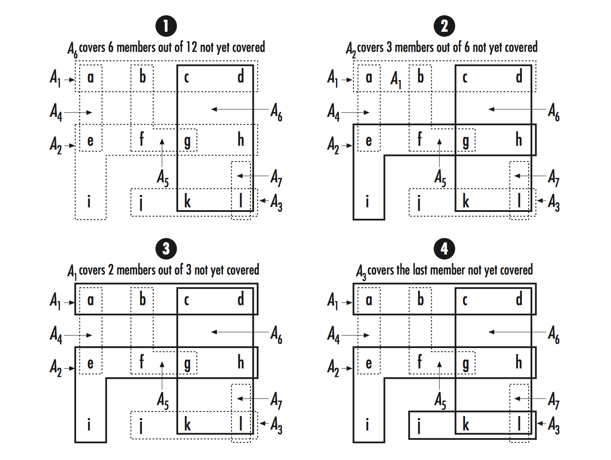

集合是不同对象的无序聚集
- 集合的成员是无序的
- 每一个成员只在集合中出现一次
集合的定义:
- 空集
- 集合相等
- 子集
集合操作:
- 交集
- 并集
- 差集
实现集合的一种好的方法是采用链表. 但每一次插入删除数据都需要遍历集合中的每一个成员, 时间复杂度 O(n)
由于性能问题, 顺序查找的方式只适合比较小型的集合数据, 可以使用哈希等查找技术提高效率
集合的抽象数据类型头文件定义
/* set.h */
#ifndef SET_H
#define SET_H
#include <stdlib.h>
/* 集合元素 */
typedef struct SetElmt_ {
void *data;
struct SetElmt_ next;
}SetElmt;
/* 集合结构 */
typedef struct Set_ {
/* 集合大小 */
int size;
/* 指向集合头结点 */
SetElmt *head;
/* 集合尾结点 */
SetElmt *tail;
void (*destroy)(void *data);
/* 判断 key1 是否等于 key2, 相等返回 1, 否则返回 0 */
int (*match)(const void *key1, const void *key2);
}Set;
/* 初始化 */
void set_init(Set *set, int (*match)(const void *key1, const void *key2),
void (*destroy)(void *data));
/* 销毁 */
void set_destroy(Set *set);
/* 插入结点 */
int set_insert(Set *set, const void *data);
/* 删除结点 */
int set_remove(Set *set, void **data);
/* 求并集 */
int set_union(Set *setu, const Set *set1, const Set *set2);
/* 求交集 */
int set_intersection(Set *seti, const Set *set1, const Set *set2);
/* 求差集 */
int set_difference(Set *setd, const Set *set1, const Set *set2);
/* 判断是否是集合成员 */
int set_is_member(const Set *set, const void *data);
/* 判断是否是了集 */
int set_is_subset(const Set *set1, const Set *set2);
/* 判断集合是否相等 */
int set_is_equal(const Set *set1, const Set *set2);
/* 返回集合大小 */
#define set_size(set) ((set)->size)
#endif
集合抽象数据类型的实现
/* set.c */
#include <stdlib.h>
#include <string.h>
#include "set.h"
/* 初始化 */
void set_init(Set *set, int (*match)(const void *key1, const void *key2),
void (*destroy)(void *data));
{
set.size = 0;
set.head = NULL;
set.tail = NULL;
set.match = match;
set.destroy = destroy;
}
/* 销毁 */
void set_destroy(Set *set)
{
void *data;
while (set->size > 0) {
data = set->head->data;
if (set_remove(set, (void **)&data) == 0 && set->destroy != NULL) {
set->destroy(data);
}
}
memset(set, 0, sizeof(Set));
}
/* 插入集合 */
int set_insert(Set *set, const void *data)
{
/* 重复数据 */
if (set_is_member(set, data)) {
return 1;
}
return _insert_into_set(set, data);
}
/* 删除元素 */
int set_remove(Set *set, void **data)
{
SetElmt *member = set->head,
/* 用以检测 set->head 就是所查找的结点 */
*prev = NUll;
while (member != NULL) {
if (set->match(member->data, *data)) {
break;
}
prev = member;
member = member->next;
}
if (member == NULL) {
return -1;
}
if (prev == NULL) {
/* 头结点是查找的结点 */
list->head = member->next;
} else {
prev->next = member->next;
}
list->tail = prev;
*data = (void *)member->data;
free(member);
set->size--;
return 0;
}
/* 并集 */
int set_union(Set *setu, const Set *set1, const Set *set2)
{
SetElmt *member;
/* set->destroy 设为 NULL, 避免失败将还有引用的 data 破坏 */
set_init(setu, set1->match, NULL);
for (member = set1->head; member != NULL; member = member->next) {
/* 复制 set1 到 setu 中, data 的指向是同一个地址 */
if (_insert_into_set(setu, member->data) != 0) {
set_destroy(setu);
return -1;
}
}
for (member = set2->head, member != NULL; member = member->next) {
if (set_insert(setu, member->data) == -1 ) {
set_destroy(setu);
return -1;
}
}
return 0;
}
/* 交集 */
int set_intersection(Set *seti, const Set *set1, const Set *set2)
{
SetElmt *member;
set_init(seti, set->match, NULL)
for (member = set1->head; member != NULL; member = member->next) {
if (set_is_member(set2, member->data)) {
if (_insert_into_set(seti, member->data) != 0) {
set_destroy(seti);
return -1;
}
}
}
return 0;
}
/* 差集 set1 - set2*/
int set_difference(Set *setd, const Set *set1, const Set *set2)
{
SetElmt *member;
set_init(setd, set1->match, NULL);
for (member = set1->head; member != NULL; member = member->next) {
if (!set_is_member(set2, member->data)) {
if (_insert_into_set(setd, member->data) != 0) {
set_destroy(setd);
return -1;
}
}
}
return 0;
}
/* 检查是否是集合元素 */
int set_is_member(const Set *set, const void *data)
{
SetElmt *member;
for (member = set->head; member != NULL; member = member->next) {
if (set->match(member->data, data)) {
return 1;
}
}
return 0;
}
/* set1 是否是 set2 的子集*/
int set_is_subset(const Set *set1, const Set *set2)
{
SetElmt *member;
if (set1->size > set2->size) {
return 0;
}
for (member = set1->head; member != NULL; member = member->next) {
if (!set_is_member(set2, member->data)) {
return 0;
}
}
return 1;
}
/* 集合相等 */
int set_is_equal(const Set *set1, const Set *set2)
{
SetElmt *member;
if (set1->size != set2->size) {
return 0;
}
return set_is_subset(set1, set2);
}
/* 不检查重复的集合元素, 不要直接在集合外直接调用 */
int _insert_into_set(Set *set, const void *data)
{
SetElmt *element;
if ((element = (SetElmt *)malloc(sizeof(SetElmt))) == NULL) {
return -1;
}
element->data = (void *)data;
if (set->size == 0) {
/* 空集 */
set->head = element;
} else {
set->tail->next = element;
}
set->tail = element;
element->next = NULL;
set->size++;
return 0;
}
集合覆盖
给定一个集合 S, 集合 P 由集合 S 的子集 A1 到 An 组成, 集合 C 由集合 P 中的一个或多个子集组成. 如果 S 中的每个成员都包含在 C 的至少一个子集中, 则称集合 C 覆盖集合 S C 包含的 P 的子集应该越少越好
以下程序使用一种贪心法算法, 每一次都尝试尽可能的覆盖到更多的成员, 得到不一定是最优解 给定一个集合, 代表有 12 各技能: S = {a, b, c, d, e, f, g, h, i, j, k, l} 然后一共有 7 名选手 P = {A1, A2, …, A7} 每一位选手都有不同的技能:
A1 = {a, b, c, d} A2 = {e, f, g, h, i} A3 = {j, k, l} A4 = {a, e} A5 = {b, f, g} A6 = {c, d, g, h, k, l} A7 = {l} 最优解的集合覆盖是 C = {A1 , A2 , A3} 不过我们的程序给出了的是 C = {A6, A2, A1, A3}

#include <stdlib.h>
#include "set.h"
/* 集合 P 元素结点结构 */
typedef struct KSet_ {
void *key;
Set set;
}KSet;
/* 函数在集合 P 的子集 A<sub>1</sub>~A<sub>n</sub> 中挑选出能够覆盖集合 S 的近似最优解
* @param members: 待覆盖的集合 S
* @param subsets: 集合 P 中的子集
* @param covering: 作为返回的覆盖集合 C
*
* 函数首先初始化 covering, 只要 members 中的还有未覆盖的成员, 且 subsets 中的
* 子集还没有挑选完, 就继续迭代最外层循环
* 在循环中,每次迭代时都在 subsets 中找出能够覆盖到 members 的最大交集
* 然后将这个集合加到覆盖集 covering 中并把它的成员从 members 中移除
*/
int cover(Set *members, Set *subsets, Set *covering)
{
Set intersection;
KSet *subset;
SetElmt *member, *max_member;
void *data;
int max_size;
/* 初始化 covering */
set_init(covering, subsets->match, NULL);
while (set_size(members) > 0 && set_size(subsets) > 0) {
/* Find the subset that covers the most members */
max_size = 0;
/* 循环集合 P 中的元素 */
for (member = subsets->head; member != NULL; member = member->next) {
/* 求 P 中元素结点和 S 的交集, 如果 P 中有结点中的元素完全不属于 S, 返回错误 */
if (set_intersection(&intersection, &((KSet *)member->data)->set,
members) != 0) {
return -1;
}
/* 贪心法, 只保留最大能产生最多交集元素的结点 */
if (set_size(&intersection) > max_size) {
max_member = member;
max_size = set_size(&intersection);
}
/* 重置中间集合, 以便循环使用 */
set_destroy(&intersection);
}
/* 检查查找到子集, 若没有匹配到 P 和 S 任何交集, 返回失败. 因为空集是任何集合的子集 */
if (max_size == 0) {
return 1;
}
/* 将查找到的 P 中的结点加入集合 C 中 */
subset = (KSet *)max_member->data;
if (set_insert(covering, subset) != 0) {
return -1;
}
/* 将查找到的 P 集合中的结点里的属于集合 S 中的数据从 集合 S 中删除掉 */
for (member = (&subset->set)->data;
member != NULL; member = member->next) {
data = member->data;
if (set_remove(members, (void **)&data) == 0 &&
members->destroy !== NULL ) {
members->destroy(data);
}
}
/* 将该次选中的 P 集合中的结点从集合 P 中删除. */
if (set_remove(subsets, (void **)&subset) != 0) {
return -1;
}
}
/* 在查找完 P 集合中所有结点, 依然没有覆盖完 S 的所有元素时, 返回失败 */
if (set_size(members) > 0) {
return -1;
}
return 0;
}